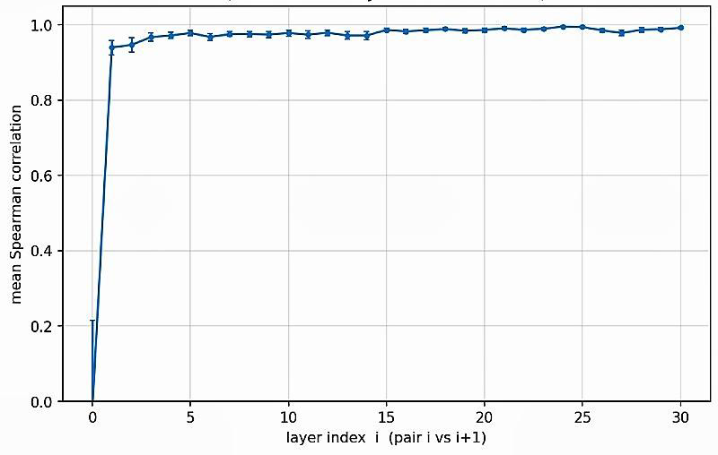
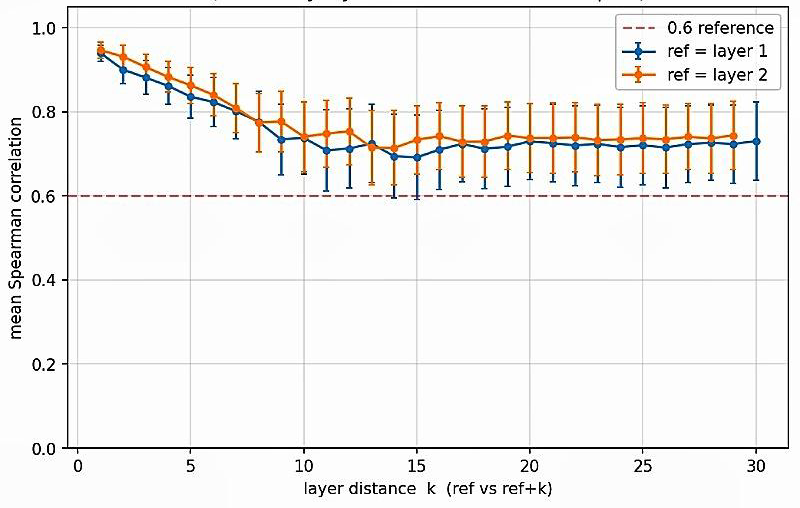
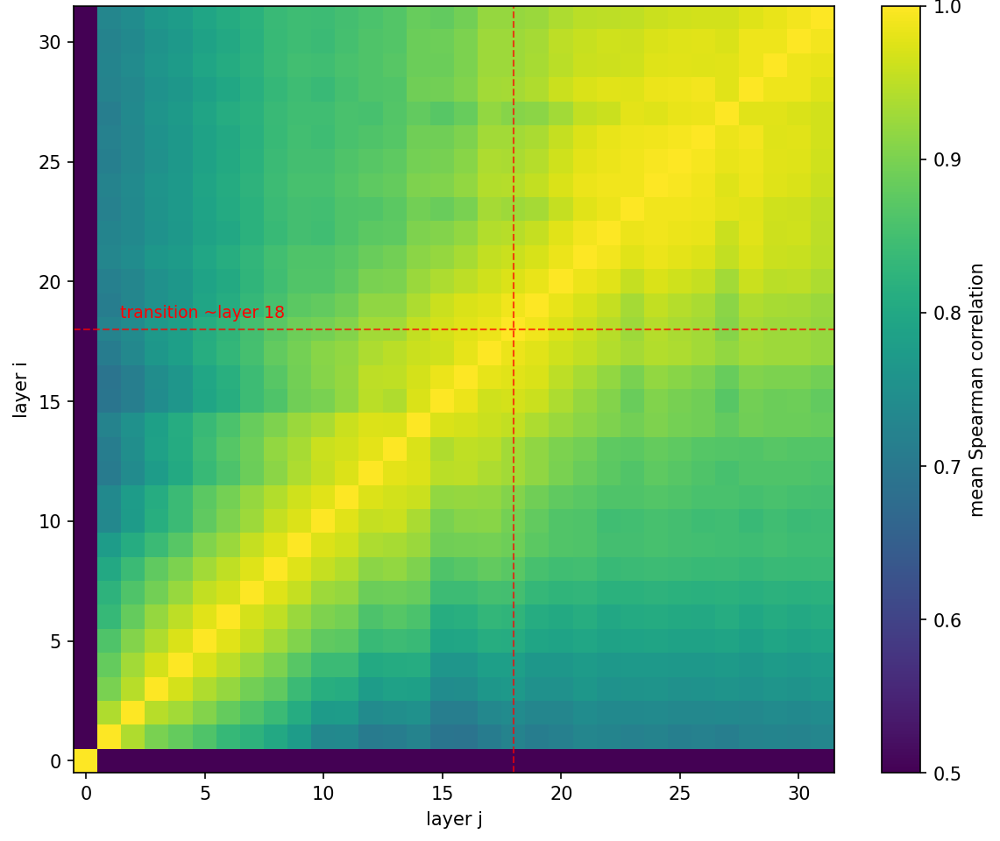
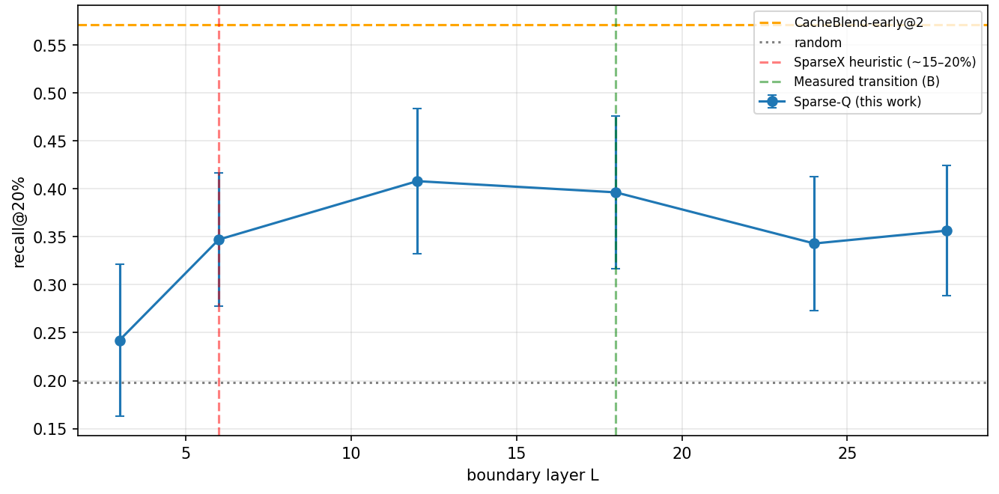
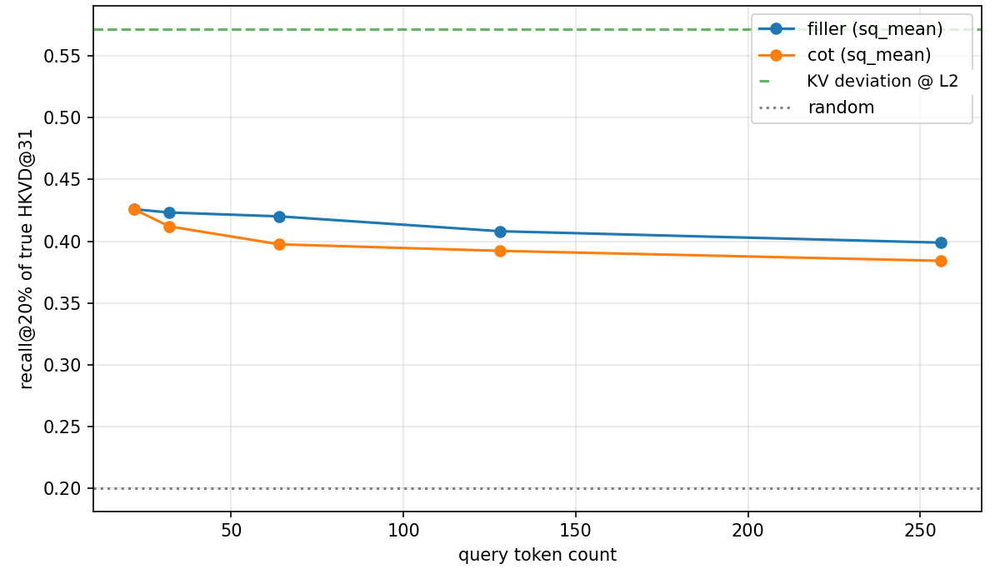
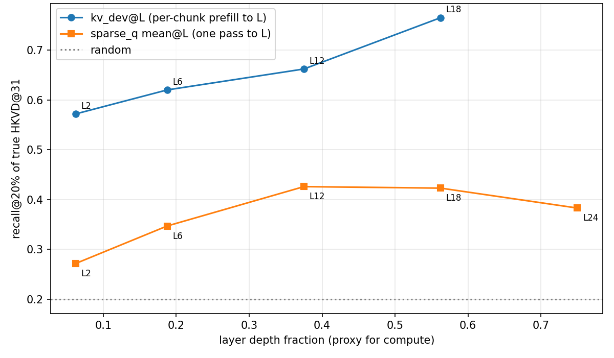

Where Does Early-Layer Token Selection Fail?
Measuring how early-layer token rankings hold up with depth in RAG KV-cache reuse
Saransh Patel · October 8, 2026
This study spans three papers on KV-cache reuse for RAG: CacheBlend [1], CacheClip [2] and SparseX [3]. Each one makes a different choice about where to read the signal that decides which tokens to recompute. The experiments here test the assumptions behind those choices on one model and one dataset.
Fast RAG serving often reuses KV caches that were computed for each retrieved chunk on its own. Reuse is cheap, but those caches are slightly wrong: no chunk ever saw the others. Recent methods patch this by recomputing a small set of tokens, and several of them pick those tokens using a signal read at an early layer.
I wanted to know how well that early signal holds up deeper in the model. This post is a write-up of the experiments I ran to measure it.
It is a measurement study, not a new method. Every number comes from one model (Mistral-7B), one dataset (MuSiQue) and 150 samples, so read the results as evidence about this setup, not as general laws. If the report moves too fast, part 7 explains the background with diagrams.
The post has eight parts:
- Summary: the results in four points.
- Problem and gap: why reused caches go stale, and what existing fixes assume.
- Findings: two regimes, a shared ceiling, and SparseX's boundary.
- Limitations and open questions: what this does and does not show.
- Relationship to existing work: where this sits next to CacheBlend, CacheClip and SparseX.
- Follow-up: the short-query regime: two controlled experiments on Sparse-Q.
- Detailed explanation: the background concepts, with diagrams.
- References
Fast RAG serving reuses KV caches computed per chunk, so those caches are stale. Several recent fixes pick which tokens to recompute using a signal read at an early layer. I measured how well that signal holds up at depth.
- Two regimes, not one. Early-layer token rankings track the deeper layers up to ~layer 18. After that, a distinct, internally coherent deep-layer regime takes over.
- A shared ceiling. Of the five signal families I tested, none recovers more than ~57% of the deep-layer high-deviation tokens, and no pairwise combination beats the best single signal.
- SparseX's default boundary is not the best one here. SparseX has a similar two-phase design but sets its boundary by sweeping. In this short-query setup, a deeper boundary does better than its default.
- Open question. Can the boundary be derived from the model's own signals instead of a sweep? I have not tested this yet.
Setup: Mistral-7B-Instruct-v0.3 · MuSiQue · n = 150.
01 Problem and Gap
The setting, in four steps:
- RAG prepends retrieved chunks to the prompt. The long input makes time-to-first-token (TTFT) the dominant serving cost.
- Chunk-level KV-cache reuse removes that cost: each chunk's cache is precomputed once and reused across requests.
- Independently computed caches miss cross-chunk attention, which degrades multi-hop answer quality.
- The fix is selective recomputation: recompute only the tokens whose cached state is most wrong. Everything then hinges on how those tokens are selected.
Diagram of why reused caches go stale: D.1.
Three lines of work, read in sequence, make the open gap precise:
- CacheBlend [1] scores tokens by KV deviation at an early layer and propagates that selection through every later layer. The assumption is that a token important early stays important all the way down.
- CacheClip [2] observes that this assumption weakens at depth. Its fix, an auxiliary model that approximates deep-layer importance, improves deep selection. But it adds a second model, can create pipeline bubbles under concurrent serving, and discards the early-layer signal.
- SparseX [3] arrives independently at a two-phase design: full attention in early layers, sparse recomputation after a boundary. The boundary is set heuristically, swept per task and reported as 15–20% of depth, with no signal-based criterion for where it should sit.
Side-by-side diagram of where each method reads its signal: D.2.
- How do early-layer importance signals actually degrade with depth?
- Which signal families can and cannot predict deep-layer importance?
- What criterion, other than a sweep, could set the transition boundary?
The newest method has a two-phase design, but its boundary comes from a benchmark sweep rather than from the model's own structure.
02 Findings
- Model: Mistral-7B-Instruct-v0.3, single A100-80GB.
- Data: MuSiQue multi-hop QA [7], 150 validation samples. 6-chunk RAG inputs (2 supporting + 4 distractor paragraphs).
- Validation: The pipeline reproduces CacheBlend's published adjacent-layer correlation (ρ ≈ 0.96). RoPE reconstruction max error < 0.001.
2.1 Two regimes, one measurable transition
I measured the rank correlation of per-token KV deviation between layers (what this means: D.3). Four results:
- Adjacent layers: CacheBlend's assumption holds. ρ ≈ 0.95 across all 31 consecutive pairs (Figure 1a).
- Distant layers: it weakens. Correlation decays from 0.95 to a plateau of ~0.74, decaying actively through layers 2–18 (Figure 1b).
- The structure is two blocks, not a gradient. The 32×32 heatmap (Figure 2) shows an early/mid regime and a deep block (layers ~18–31, ρ > 0.9 within it) whose token ranking diverges from the early layers.
- It is broad-based, not a few outliers. Removing the top-20% highest-deviation tokens lowers deep-layer correlation only from 0.74 to 0.67.
In the deep regime, the early-layer ranking correlates with the deep-layer ranking at only ρ ≈ 0.74. A two-regime structure with a transition near layer 18 is consistent with a depth-adaptive design, where the selection signal changes partway through the model.



2.2 A shared ceiling across five signal families
Can any cheap, early-computable signal predict deep-layer (layer 31) high-KV-deviation tokens better than CacheBlend's propagated selection? I evaluated five mechanistically independent signals at recall@20% of the true layer-31 set (how recall@20% works: D.4).
| Signal | Family | Recall@20% | Note |
|---|---|---|---|
| KV deviation @ layer 2 (CacheBlend) | KV deviation | 0.571 | Best single signal |
| Cross-attention probe @ layer 0 | Attention | 0.559 | Matches ceiling, not better |
| Sparse-Q @ L = 12 (SparseX, best) | Query attention | 0.408 | Short-query regime (16 tokens) |
| Sparse-Q @ L = 6 (SparseX default) | Query attention | 0.347 | Their default boundary |
| Linguistic salience (NER, pronouns, numbers) | Text structure | 0.261 | Near random (0.198) |
| Residual norm-delta | Hidden states | 0.217 | Near random (0.198) |
Table 1: Recall@20% of true high-KV-deviation tokens at layer 31 (n = 150). No pairwise combination of any signal with KV deviation improves over KV deviation alone.
- Only attention-derived signals reach the ceiling (~0.55–0.57). Representation-based (residual norm) and linguistic signals stay near random at every read depth I tested.
- Sparse-Q is weaker in the short-query RAG regime. It is strong in SparseX's own evaluation, but here it sits 0.16 below KV deviation (16 non-reuse tokens vs. their longer segments), even at its best boundary. Part 6 digs into why.
2.3 SparseX's default boundary underperforms here, and boundaries are signal-specific
I swept the full→sparse boundary across six depths {3, 6, 12, 18, 24, 28} using SparseX's Sparse-Q mechanism (Figure 3):
- Their default is not the best here. Recall peaks at L = 12, not the default L = 6 (0.408 vs. 0.347).
- Boundaries are signal-specific. The best Sparse-Q boundary (L = 12) is not the KV-deviation transition (L = 18). The two signals measure different things, so one universal boundary is unlikely to serve both.
- The ceiling holds. No signal or combination I tested breaks ~0.57. The deep-regime gap was not recovered by any early-computable signal in this study.

03 Limitations and Open Questions
In this setup, the findings show three things: a two-regime structure with a measurable transition, a ~0.57 ceiling shared by all early signals I tested, and a gap between SparseX's default boundary and the best one for its own signal.
- That the layer-18 transition holds for other models, sizes or tasks. Only Mistral-7B was measured.
- End-task quality. Recall is measured against layer-31 KV deviation, which is a proxy, not answer F1.
- Serving speed. No TTFT was measured in a real serving stack.
- Anything about SparseX outside the short-query RAG setting. Its own evaluation uses longer segments, where it may behave differently.
The natural next question: can the full→sparse boundary be derived from a signal instead of a sweep? I have not built or tested such a criterion. These are the experiments I would run to find out.
Does it generalize?
- Models. Replicate the decay curve and transition detection on Qwen2.5-7B-Instruct, Llama-3.1-8B-Instruct, and one MoE model (Qwen3-30B-A3B, the family SparseX evaluated on).
- Question. Is the transition a stable fraction of depth (~56% for Mistral), or does it vary with model size, architecture or task? If it varies, what drives it?
- Either answer is useful. A model-agnostic transition would need no per-model sweeping. A model-dependent one could still be characterized, giving a prediction rule instead of a lookup table.
Does it matter end to end?
- Integration. Plug a signal-derived boundary into SparseX-vLLM's full+sparse hybrid path in place of the fixed default.
- Benchmarks. RULER (variable tracking, MQ-NIAH), MuSiQue, 2WikiMQA. This covers SparseX's tasks and the multi-hop RAG tasks where I have ground truth.
- Metrics. F1/Rouge-L at matched recompute budgets, plus real TTFT including the cost of computing the boundary.
- Short-query regime. Evaluate 16–50 non-reuse tokens alongside long ones. SparseX's evidence covers long segments, and short queries are where its signal was weakest here.
04 Relationship to Existing Work
This post does not propose a new token-selection method. It is a set of measurements that sit underneath the existing ones:
- A cross-layer correlation measurement that directly tests CacheBlend's early-layer assumption at depth.
- A five-signal comparison showing which signal families did and did not predict deep-layer importance in this setup.
- A boundary ablation on SparseX's own signal, showing that its default underperforms in short-query RAG and that the best boundary is signal-specific.
A recent empirical study [4] found existing methods complementary, gaining ~5% when combined. I found the opposite for non-attention signals: no pairwise combination beat KV deviation alone, because the added signals selected the wrong tokens. One way to reconcile the two: their complementarity is between attention-based methods at different depths, which would be consistent with the two-regime structure measured here.
05 Follow-up: Diagnosing the Short-Query Regime
What explains Sparse-Q's degradation on short RAG queries, and which part is recoverable?
Section 2.2 reported that Sparse-Q sits 0.16 below KV deviation in the short-query regime, and left it unexplained. Two candidate causes, with very different consequences:
- Information budget. A short query gives too few attention rows. If true, longer queries fix it.
- Structural. Query attention does not carry the needed information at any length. If true, the method has a hard limit in this regime.
I ran controlled experiments to decide between them. The setup is identical to above (Mistral-7B, MuSiQue 6-passage inputs, ground truth = KV deviation at layer 31, recall@20%, n = 150), with paired Wilcoxon tests throughout.
Experiment 1: Does query length fix it? No.
Design. Pad the same questions to exact totals of 32/64/128/256 tokens (a 16× sweep), in two arms: unrelated filler vs. chain-of-thought-style scaffolding. The ground truth is the same throughout, so every comparison is paired.
| Condition | Sparse-Q (max heads) | Sparse-Q (mean heads) |
|---|---|---|
| Baseline (~22 tokens) | 0.408 | 0.426 |
| Filler, 32 tokens | 0.405 | 0.423 |
| CoT, 32 tokens | 0.393 | 0.412 |
| Filler, 64 tokens | 0.401 | 0.420 |
| CoT, 64 tokens | 0.380 | 0.397 |
| Filler, 128 tokens | 0.390 | 0.408 |
| CoT, 128 tokens | 0.375 | 0.392 |
| Filler, 256 tokens | 0.380 | 0.399 |
| CoT, 256 tokens | 0.367 | 0.384 |
Table A1: Recall@20% vs. query length (n = 150). KV-deviation reference: 0.572. Random: 0.200.
- A 16× longer query does not help. Recall stays flat or declines and never trends toward 0.572, so the information-budget explanation is rejected for this setup.
- CoT padding hurts. At every matched length, reasoning-style text scores below meaningless filler (differences 0.011–0.023, all p ≤ 0.001). Text of the kind often added to help generation makes the query a worse relevance probe here.
- Even filler erodes the signal, dose-dependently. The drop grows from 0.003 (n.s.) at 32 tokens to 0.027 (p < 0.001) at 256. It persists when padding tokens are excluded from scoring, so extra context shifts the question tokens' own attention.

Experiment 2: Which part is just a design choice?
Design. Sparse-Q makes two independent aggregation choices: how to combine query rows (published: sum) and how to combine attention heads (published: max). I ablated both axes at baseline query length. Rows: sum, last token, max row, entropy-weighted. Heads: max vs. mean. Diagram: D.5.
| Variant (rows / heads) | recall@10% | recall@20% | recall@30% |
|---|---|---|---|
| sum / max (published) | 0.292 | 0.408 | 0.483 |
| sum / mean ← best | 0.323 | 0.426 | 0.498 |
| last / max | 0.309 | 0.393 | 0.454 |
| last / mean | 0.326 | 0.403 | 0.464 |
| max-row / max | 0.257 | 0.382 | 0.469 |
| max-row / mean | 0.297 | 0.412 | 0.489 |
| entropy-weighted / max | 0.298 | 0.403 | 0.471 |
| entropy-weighted / mean | 0.324 | 0.422 | 0.486 |
Table A2: Aggregation ablation (n = 150).
- Mean over heads beat max over heads every time. This held for all four row strategies (+0.010 to +0.030, every comparison p < 0.00001). A plausible reading: the max follows a single head's opinion, while the mean pools evidence across heads.
- No row strategy beat plain summation. Entropy weighting came closest and still trailed (p = 0.014). Among the variants tested, the gain comes from the head axis: a one-line change worth ~2 recall points.
- The gain does not depend on query length. At all nine query lengths from 22 to 256 tokens, the mean-vs-max gap stays between +0.017 and +0.020 (each p < 0.00001), with no crossover or trend.
Decomposing the 0.16 gap
| Size | Part of the gap |
|---|---|
| ~0.02 | Fixable. The head-aggregation choice, recoverable at every query length. |
| 0.00 | From query length. Padding does not help, and mildly hurts. |
| ~0.15 | Structural residual. Survives every intervention I tried (0.426 vs. 0.572). One hypothesis: attention is trained for next-token prediction, not staleness estimation, so its link to deep-layer KV deviation may be bounded in this regime. |
Table A3: Where the 0.16 gap between Sparse-Q and KV deviation comes from.
Depth behavior points the same way. KV-deviation quality rises monotonically with probe depth (accelerating at the layer-18 transition). Sparse-Q peaks at layer 12 and then decays (Figure A2). Opposite curves suggest the two signals carry different information.

What this means
- The short-query gap is real in this setup. It is not explained by query length, and aggregation explains only a small part of it. Short queries are also a regime SparseX's own evaluation does not cover.
- Signal families behave differently with depth. This is the kind of model-internal structure a signal-derived boundary could be built from.
- One small, cheap change: mean-over-heads aggregation, ~2 recall points at no added cost. This is measured on recall@20%, not on end-task quality.
- Follow-up in progress: probing attention from the first generated answer token, on the hypothesis that relevance crystallizes during generation. The aim is the 0.15 structural residual.
06 Detailed Explanation
The report above moves quickly. This part slows down and explains the background concepts, one diagram at a time. The diagrams are simplified on purpose: they show the idea, not every implementation detail.
D.1 Why reused caches go stale
Before an LLM can produce its first token, it has to run the whole prompt through every layer. This step is called prefill, and its output is the KV cache: one key and one value vector per token, per layer. In RAG the prompt is mostly retrieved text, so prefill is long, and it dominates time-to-first-token.
The same chunks are retrieved again and again across requests. So a natural trick is to prefill each chunk once, store its KV cache, and paste the stored caches together at request time. Only the user's query is computed fresh.
The top row is what the model would compute with a normal prefill. The bottom row is what reuse gives you. The query is still computed fresh, so it attends to all chunks. What is missing is attention between chunks: chunk B's cache was built without ever seeing chunk A.
For multi-hop questions this matters, because the answer often needs a fact in one chunk to be linked to a fact in another. Recomputing a few tokens with full attention is how the methods in part 01 try to restore those links cheaply.
D.2 Where each method reads its signal
All three methods recompute only some tokens. They differ in where the decision about which tokens to recompute comes from. Figure D2 lays the 32 layers of Mistral-7B out left to right and marks, for each method, where full computation happens and where the selection signal is read.
Read the top three rows as "where does the decision come from". CacheBlend decides almost immediately and never changes its mind. CacheClip hands the decision to a separate model. SparseX runs full attention for a few layers and decides at its boundary.
The bottom row is not a method. It is what the measurements found: the token ranking in layers 0–17 is different from the ranking in layers 18–31. A selection made at the far left of the diagram is being applied to a regime that ranks tokens differently.
D.3 KV deviation and rank correlation
KV deviation is the staleness score used throughout this post, following CacheBlend [1]. For token t at layer ℓ, it compares the reused cache to what a full prefill would have produced:
Δ(t, ℓ) = distance( KV_reused(t, ℓ), KV_full(t, ℓ) )
A high Δ means the cached state of that token is badly wrong at that layer. Those are the tokens worth recomputing. Computing Δ needs the full prefill, so it is only available offline, as ground truth. A real system has to predict which tokens have high Δ.
To compare two layers i and j, rank all context tokens by Δ at each layer and compute the rank correlation ρ(i, j) between the two orderings. ρ = 1 means the same order. ρ = 0 means no relationship. Only the order matters, not the size of Δ.
Reading Figure 2. Each cell (i, j) of the heatmap is ρ between layer i and layer j. The bright diagonal says neighbouring layers agree. The two warm squares say there are two groups of layers that agree with each other internally. The cooler off-diagonal regions say an early layer and a deep layer disagree about which tokens are most stale.
ρ ≈ 0.74 does not mean 74% of tokens are selected correctly. It is a correlation over the ranking of all tokens. The number that describes selection is recall, explained next.
D.4 How recall@20% works
Every signal in Table 1 is scored the same way. Take the 20% of tokens with the highest true Δ at layer 31: that is the ground-truth set. Let the signal pick its own top 20%. Recall is the fraction of the ground-truth set the signal found.
A random selector picks 20% of tokens and so finds about 20% of the truth, which is why "random" in Table 1 sits near 0.20. A perfect selector would score 1.0. So 0.57 means the best early signal found a bit more than half of the tokens that are most stale at the last layer.
D.5 Inside Sparse-Q's aggregation
Sparse-Q scores context tokens by how much the query attends to them. Attention gives a 3-D array: for each head, each query token (row) has a weight on each context token. To get one score per context token, two dimensions have to be collapsed: rows and heads. Experiment 2 tested both choices.
Max over heads keeps a token if any one head attends to it strongly. Mean over heads keeps a token if heads attend to it on average. In this setup the mean was the better predictor of deep-layer staleness, by about 2 recall points.
Send me an email at saranshappy@gmail.com
References
- Yao et al. CacheBlend: Fast Large Language Model Serving for RAG with Cached Knowledge Fusion. EuroSys 2025. https://arxiv.org/abs/2405.16444
- Yang et al. CacheClip: Accelerating RAG with Effective KV Cache Reuse. arXiv 2025. https://arxiv.org/abs/2510.10129
- Zhang et al. SparseX: Efficient Segment-Level KV Cache Sharing for Interleaved LLM Serving. arXiv 2026. https://arxiv.org/abs/2606.01751
- Cestola, Xia et al. An Experimental Study of KV Cache Reuse Strategies in Chunk-Level Caching Systems. arXiv 2026. https://arxiv.org/abs/2603.20218
- Hu et al. EPIC: Efficient Position-Independent Caching for Serving Large Language Models. ICML 2025. https://arxiv.org/abs/2410.15332
- Jiang et al. MInference 1.0: Accelerating Pre-filling for Long-Context LLMs via Dynamic Sparse Attention. NeurIPS 2024. https://arxiv.org/abs/2407.02490
- Trivedi et al. MuSiQue: Multihop Questions via Single-Hop Question Composition. TACL 2022. https://arxiv.org/abs/2108.00573